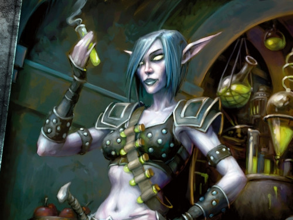
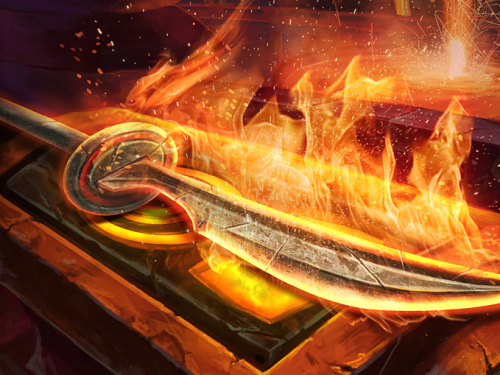

Niveles de profesión
Para subir el nivel de profesión solamente tenemos que ir haciendo o recolectando objetos hasta que el juego determine que es demasiado fácil hacerlo. Para saber este punto, se diferencia en colores: si a la hora de hacerlo/recolectarlo nos aparece en naranja, tiene una probabilidad del 100% de darnos un punto de nivel. Si aparece en amarillo, la probabilidad de conseguir el punto de habilidad es frecuente. Si aparece en verde, la probabilidad es poco frecuente. Y si aparece en gris, no nos va a dar ningún punto de nivel de habilidad.
Rangos de Profesión
Según vamos subiendo de nivel de profesión, también tenemos que aprender los rangos que nos enseña el instructor.
- Aprendiz - del nivel 1 al 50
- Oficial - del nivel 50 al 125
- Experto - del nivel 125 al 225
- Artesano - del nivel 225 al 300
Si cambiamos de profesión, perdemos todos los rangos y puntos y si queremos volver a aprender esa misma profesión, tendremos que empezar desde el nivel 1.
A parte, no podremos subir de profesión en cualquier nivel, es decir, siendo un nivel bajo no podremos aprender un nivel de profesión alto. Tendremos que tener cierto nivel:
- Aprendiz - Nivel 5 para profesiones de producción/pesca y no se requiere para recolección.
- Oficial - Nivel 10 para profesiones de producción/pesca y no se requiere para recolección.
- Experto - Nivel 20 para Producción, Nivel 10 para Recolección y Pesca.
- Artesano - Nivel 35 para Producción, Nivel 25 para Recolección y Nivel 10 para Pesca.
Las profesiones de producción son aquellas en las que recolectamos recetas que nos enseñan a hacer equipo que podemos equipar o comerciar: Alquimia, Herrería, Cocina, Ingeniería, Pelatería y Sastreria.
Las profesiones de recolección son las que ayudan a las profesiones de producción adquiriendo materiales requeridos para crear objetos: Botánica, Minería, Desuello y Pesca.
Además, las profesiones consideradas de servicio son las que generan objetos que benefician a los jugadores: Encantamiento y Primeros Auxilios.
Profesiones Primarias de Producción
Alquimia

Con la profesión de Alquimia podremos crear frascos, pociones, elixires y otros objetos que podemos usar para obtener un beneficio. Es muy útil para mazmorras y bandas y lo habitual es compaginarlo con Botánica para poder obtener los materiales(hierbas) para hacer los objetos.
También podemos complementarlo con Pesca como profesión secundaria y obtener el Aceite de Pescado, entre otros, que necesitaremos en algunos casos.
Herrería

Esta profesión la aprendemos pricipalmente aquellos que necesitan usar Placas, aunque también se hacen objetos de Malla, ya que principalmente obtendremos recetas para equipo.
Se combina con Minería para conseguir las menas necesarias.
También podremos fabricar armas.
Ingeniería
En WoW Classic, Ingeniería es la más divertida, con la que podremos hacer objetos con utilidades únicas para DPS y especialmente para JcJ. Un ejemplo es la Bomba Arcana que pueden usar los DPS para silenciar y drenar maná.
Pelatería
Con Pelatería podemos hacer objetos de Cuero y Malla. Normalmente se acompaña con Desuello para poder obtener materiales para hacer los objetos.
Cuando llegamos al máximo nivel, podemos hacer conjuntos de objetos necesarios en JcE que tiee resistencias, como Malla de Dragón Verde con resistencia naturaleza
Sastrería
Lo habitual es que los casters aprendan Sastrería junto a Encantamiento.
En Sastrería aprenderemos a hacer objetos de Tela y Capas. Cuando llegamos al máximo nivel los objetos que hacemos ofrecen resistencia y bonificación. Los materiales que necesitaremos los iremos recogiendo de humanoides y comprando a comerciantes, principalmente.
Además, con Sastrería podemos conseguir hacer bolsas con más espacio, como Bolsa de Paño Rúnico, pero también podemos hacer bolsas especiales para profesiones como la Cartera de Cenarius, o una bolsa especial para Brujos Bolsa de tela vil del Núcleo.
Encantamiento
Con encantamiento podemos mejorar parte de nuestro equipo, poniendo dicho encantamiento en armas, zapatos, brazaletes, pecho, capa, guantes y escudo. Este encantamiento es permanente a no ser que nos cambiemos el objeto o pongamos otro encantamiento diferente en el mismo.
Para conseguir los materiales que necesitamos para hacer los encantamientos, tendremos que desencantar equipo que se convertirá en polvo.
Normalmente se suele emparejar esta profesión con Sastrería.
Para poder hacer Encantamiento, necesitaremos una Vara de encantamiento como Vara rúnica de arcanista que debemos tener siempre en nuestra mochila encima. Si lo tenemos en el banco, no podremos desencantar.